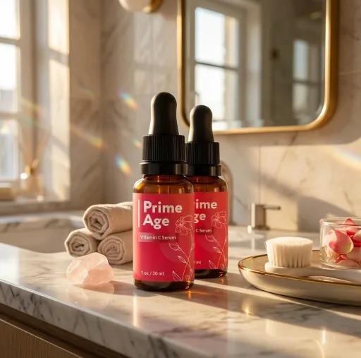
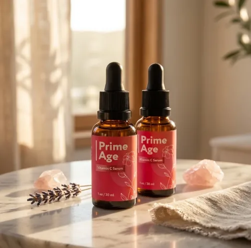
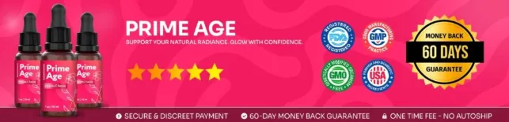

What Is Prime Age And How Does It Work?
Prime Age is a liquid formula designed to support healthy-looking skin, natural skin cell turnover, and a balanced skin and gut microbiome for adults who want to address the dullness, fine lines, and loss of firmness that can build up with age and busy routines through a natural, dependable approach — without complicated skincare routines, invasive procedures, or temporary quick fixes.
It utilizes a simple daily formula that combines Korean Pink Salt, Lactobacillus plantarum, Egyptian Blue Algae, Okinawan Korean Mushroom, Ginger, and Hibiscus to support beneficial bacteria, skin cell renewal, and a more youthful appearance, helping the body maintain its natural balance throughout the day.
The ingredients in Prime Age are carefully selected natural compounds that, according to the official website, support what the brand calls the skin-gut connection: the idea that a healthy microbiome helps the skin replace old cells with new ones, particularly for adults who prefer one simple product over multiple creams or complicated plans.
Rather than acting as a short-lived cosmetic fix, Prime Age focuses on a from-within approach, working gradually alongside daily routines to help maintain smoother-looking skin, a natural glow, and long-term wellness.
With consistent daily use, many users report a brighter complexion and a smoother skin texture, a more even-looking tone, and a gradual sense of well-being, especially when combined with a balanced diet, good sleep, proper hydration, and daily sun protection.
From a practical standpoint, Prime Age is a daily skin and gut support formula in a 1 oz (30 ml) dropper bottle designed to support wellness from within — helping you look refreshed, feel confident, and stay in control of your skin health.
Manufactured to standards that, according to the official website, go beyond what the FDA and Good Manufacturing Practices require, with every batch third-party tested, Prime Age is designed for regular daily use, focusing on safety, purity, and quality for those seeking a natural, non-prescription route to healthy aging.
Prime Age Ingredients
Every bottle of Prime Age contains a proprietary blend of six natural ingredients, Korean Pink Salt, Lactobacillus plantarum, Egyptian Blue Algae, Okinawan Korean Mushroom, Ginger Lift, and Hibiscus Firm, chosen to support skin health, balance, and protection as part of a consistent daily routine:
Korean Pink Salt: A mineral-rich salt included, according to the official website, to support a healthy balance of gut bacteria linked to the look of the skin.
Lactobacillus plantarum: A probiotic strain selected to help restore gut balance and support the skin's natural comfort.
Egyptian Blue Algae: An algae extract included to nourish beneficial bacteria and support skin cell renewal.
Okinawan Korean Mushroom: A mushroom extract with antioxidant compounds that helps fight free radicals and supports the skin's natural collagen.
Ginger Lift: The brand's ginger-based ingredient, included to support a less puffy, more defined-looking facial contour.
Hibiscus Firm: The brand's hibiscus-based ingredient, chosen to support firmer-looking skin and a smoother appearance.
Together, these ingredients work synergistically to support skin renewal, a balanced microbiome, and a healthy-looking glow from within. The official website describes the blend as proprietary and does not publish the amount of each ingredient.
Prime Age is designed for daily use, offering a natural, non-prescription approach to supporting healthy aging, without complicated routines, stimulants, or aggressive synthetic compounds.
Prime Age Side Effects
Prime Age is generally considered well tolerated and is designed for adults of different ages and lifestyles who are looking for a safe, natural, and balanced approach to healthy aging, especially those who prefer an easy daily routine to support skin renewal, firmness, and radiance without resorting to risky solutions with severe side effects.
All ingredients used in Prime Age are described on the official website as 100% natural, plant-based, and non-GMO, with no stimulants, and Prime Age is manufactured to standards that the brand says exceed FDA and Good Manufacturing Practice requirements, with third-party testing of every batch, reinforcing consistency, safety, and reliability.
With no widespread reports of serious side effects, Prime Age is generally considered a well-tolerated option. Because the formula contains a probiotic strain and botanical extracts, people with sensitive digestion, sensitive skin, or known allergies to any of the listed ingredients should start cautiously and stop using it if they notice any discomfort. It is not intended to diagnose, treat, cure, or prevent any disease, and individual results may vary.
As a standard wellness recommendation, anyone who is pregnant, nursing, under 18, or living with a known medical condition should consult a healthcare professional before starting Prime Age. The same applies to anyone taking prescription medications, ensuring it fits safely within their personal wellness plan.
Prime Age Dosage
Prime Age is meant to be used once a day, every day, and it is designed to fit easily into a daily routine, making consistency simple and convenient. It comes as a liquid formula in a 1 oz (30 ml) dropper bottle, with no powders to mix and nothing complicated to prepare.
The recommended approach is to use Prime Age once a day, following the directions printed on the label of your bottle. The official website does not describe the serving in a consistent way across its pages, so the label is the reference to follow. Using Prime Age at the same time each day allows its ingredients to work consistently.
For best results, consistency is key. Because skin cell renewal is a gradual process, the official website presents Prime Age as a formula to be used continuously for several months as part of an ongoing wellness routine.
There is no need for complex schedules or multi-step routines. One simple daily use is designed to build lasting support gradually alongside a balanced diet, good sleep, proper hydration, and daily sun protection.
As with any wellness product, it's important not to exceed the recommended amount and to check the label on your bottle. Prime Age works best when used regularly, combined with balanced nutrition and healthy daily habits.
Prime Age – Refund Policy
You can order Prime Age with confidence, knowing that every purchase is protected by a 60-day money-back guarantee. This allows you to try the formula and decide if it delivers the skin support you expect.
According to the official website, customers who are not completely satisfied after at least 30 days of use can contact support, and the refund request must be made within the 60-day guarantee period. All bottles must be sent back, whether they are opened or not, and the cost of sending them back is paid by the customer.
How the refund process works: If you decide Prime Age is not right for you, email customer support with “Refund Request” in the subject line, then send all the bottles back with the packing slip and a note with your full name and email. Once the return is received, your refund will be processed and confirmed by email.
Customer Support Contact Information: the support email address and the return address are listed on the official website and in your order confirmation email.
Refund Processing Time: After your refund is processed, it may take 5 to 10 days to appear on your statement, depending on your bank or credit card provider.
This refund policy is designed to give customers a clear and transparent experience when trying Prime Age.
Prime Age Customer Reviews
-
Angela — Kentucky, USAVerified Purchase – 6 Bottles
“My skin has a natural glow, the bloating is gone, and I’ve stopped wasting money on expensive skincare. Now I just wash my face in the morning and that’s it. No moisturizer, no concealer, no foundation. Starting PrimeAge was the best decision I ever made.”
-
Kate — Georgia, USAVerified Purchase – 6 Bottles
“This is the first time I’ve truly felt happy with both my skin and my weight. Some friends are sure I’ve had something done—and honestly, I get it. The difference in my skin and body is unreal. My sister started using PrimeAge too, and she calls me all the time to thank me. I just hope more women try it, because the results are seriously amazing.”
-
Maria — New Jersey, USAVerified Purchase – 6 Bottles
“Before trying this, I never would have believed my skin could look this smooth and radiant. Now, when I look in the mirror, the dark spots and fine lines are gone. I’m beyond grateful that this solution came into my life!”
Prime Age – Where To Buy
Prime Age is sold through its official website, so if you decide to try it, it's important to be careful about where you purchase it. The official website is the only sales channel the manufacturer lists, and it does not point to marketplaces such as Amazon, eBay, or Walmart.
Listings on third-party platforms may look similar but cannot be verified as authentic, raising concerns about safety, quality, and ingredient freshness. Products purchased outside the official source may not be covered by the 60-day money-back guarantee.
For this reason, most customers recommend purchasing Prime Age only through the official website. Buying directly from the official source ensures you receive the authentic original product, with access to customer support and the full guarantee. According to the official website, every order is a one-off purchase, with no hidden autoship, clauses, or extra charges.
To avoid counterfeit batches and ensure maximum quality, always verify that you are ordering from the official Prime Age website before completing your purchase.
To ensure you’re getting the authentic product, most users choose to visit the official website.
Is Prime Age A Scam?
Based on what the official website discloses, Prime Age does not appear to be a scam. It is a real product, sold through an established retailer, and formulated to support skin renewal, a balanced microbiome, and a more youthful appearance as part of a consistent routine.
The ingredients used in Prime Age — Korean Pink Salt, Lactobacillus plantarum, Egyptian Blue Algae, Okinawan Korean Mushroom, Ginger Lift, and Hibiscus Firm — are named on the official website for transparency, although the amount of each one is not published.
In addition to its simple formula, Prime Age is manufactured to standards the brand describes as above FDA and Good Manufacturing Practice requirements, with third-party testing of every batch, according to the official website, focused on safety, purity, and consistency.
Many users report a brighter, smoother-looking complexion and an easy daily habit, making Prime Age a practical option for those seeking natural support for healthy aging. Results vary from person to person, and no formula can promise a specific outcome.
Prime Age is backed by a 60-day money-back guarantee, and orders are one-off purchases with no autoship, recurring charges, or hidden fees. This policy underscores the manufacturer's commitment to customer satisfaction and product integrity.
If you're looking for a simple daily formula to support skin renewal, firmness, and radiance without complicated routines, Prime Age is worth considering — especially when purchased directly from the official website.
For those who want to verify product details or check current availability, the official Prime Age website remains the safest option.

Check Availability On Official Website
